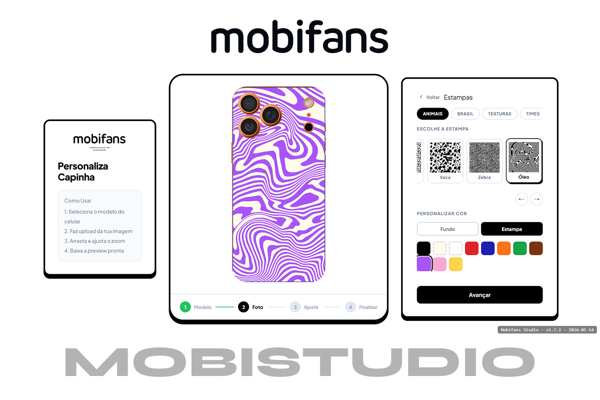
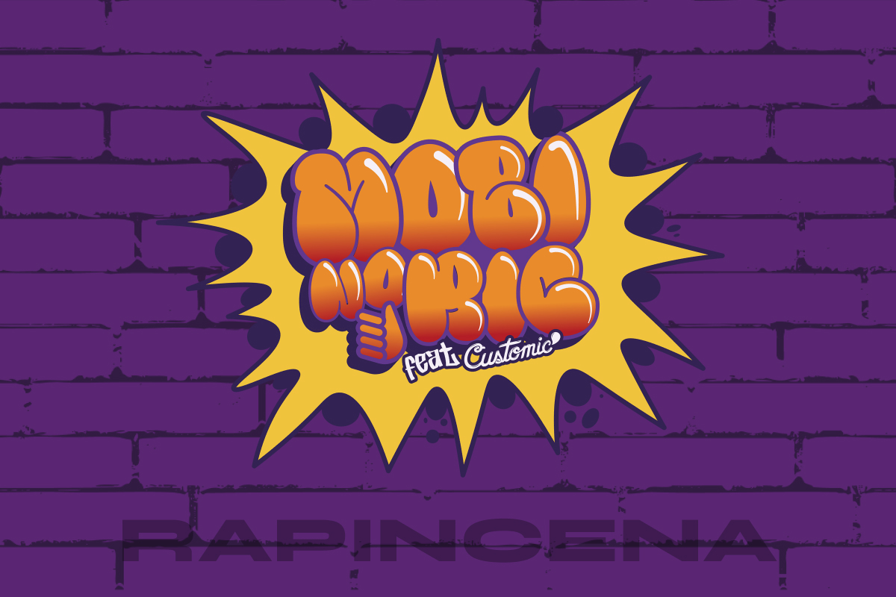
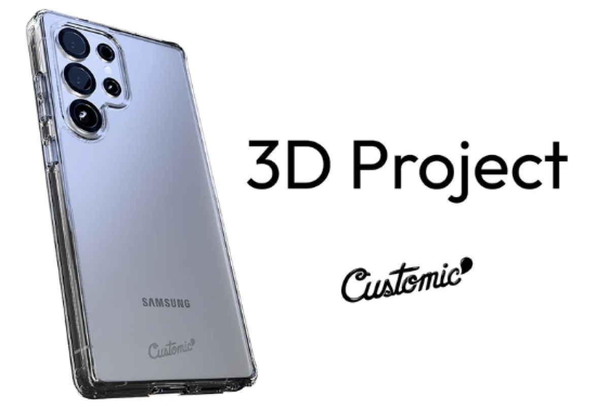
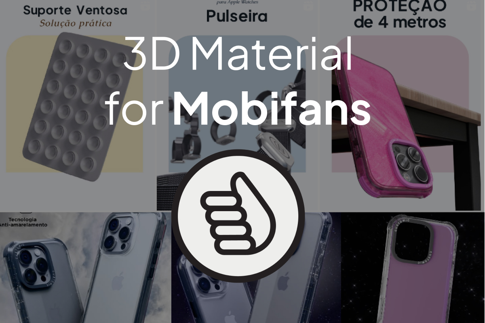
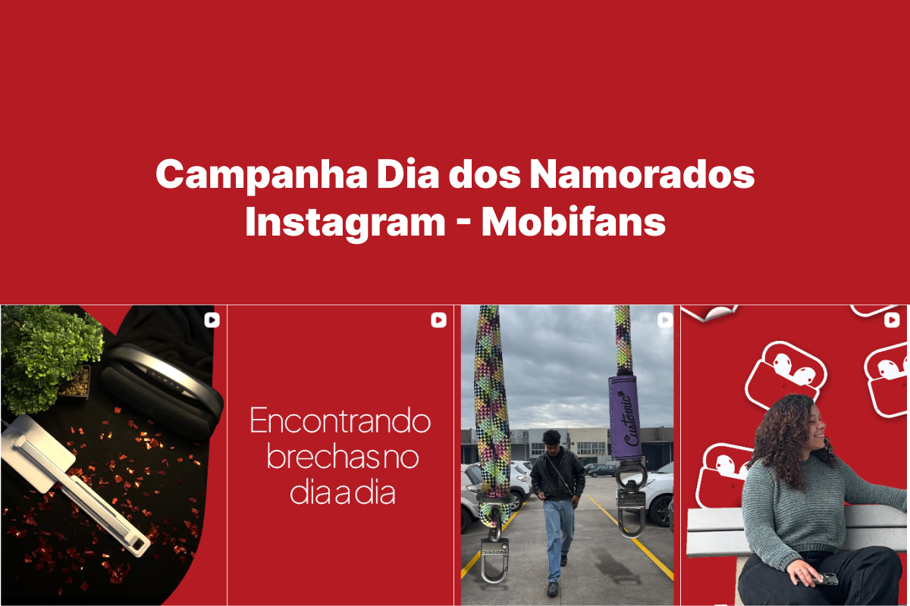
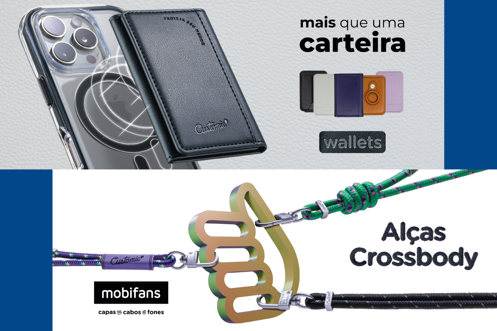

🎨
Pipeline completo de design
Do briefing ao Brandbook, do conceito ao arquivo CMYK pronto para impressão. Preparo arquivos bem estruturados e otimizados, facilitando o processo na hora da impressão ou produção.
com 4+ anos de experiência. Atuo do briefing ao deploy, do Figma ao código funcional em produção. Uso IA generativa estrategicamente, não como tendência.
01 — Sobre Mim
Designer Multimídia com mais de 4 anos de experiência em identidade visual, produção gráfica e audiovisual. Atuo como um comunicador acessível da marca em todas as aplicações, do digital ao impresso, do conceito ao arquivo final.
Nos últimos anos na Mobifans/Customic, desenvolvi e apliquei a identidade visual da marca em múltiplos canais. Quando a equipe principal se ausentou por 5 meses, assumi 100% da operação sem perder um prazo, com avaliação de desempenho de 9,56/10.
Construí o MobiStudio do zero: Figma → Canvas API → deploy em produção no Netlify. Esse projeto reflete o meu ritmo: gosto de fechar o ciclo de ponta a ponta, conduzindo a ideia com a tranquilidade de uma manhã com café, até o deploy final.
Do briefing ao Brandbook, do conceito ao arquivo CMYK pronto para impressão. Preparo arquivos bem estruturados e otimizados, facilitando o processo na hora da impressão ou produção.
Levo a criação um passo além do Figma, traduzindo o design diretamente para código funcional e reduzindo ruídos entre etapas. Figma → código → produção, sem intermediários.
Uso Claude Pro diariamente para geração de assets, variações visuais e refinamento de código. Reduzi tempo manual em 50%+ em projetos de grande volume.
02 — Ferramentas & Competências
✦ Design Gráfico & Visual
✦ Desenvolvimento Web
✦ IA Generativa & Workflow
✦ 3D, Audiovisual & Outros
03 — Projetos em Destaque

Customizador Interativo de Capinhas — v1.7.2
Ferramenta web proprietária para quiosques da Mobifans visualizarem, em tempo real, a foto do cliente aplicada à capinha, com zoom, rotação, arraste e suporte a até 6 fotos por capa. Construída do zero: do problema ao deploy em produção.

Enxoval visual — Maior festival de Hip-Hop do Brasil
Material visual completo desenvolvido para a participação da Mobifans no Rap in Cena, do briefing ao arquivo final, cobrindo todos os pontos de contato digitais e físicos do evento.
Outros projetos

Desenvolvimento manual de 70+ artes para estampas personalizadas dentro do MobiStudio. Une produção gráfica tradicional com ferramenta interativa proprietária.

Modelagem e renderização 3D de capa personalizada para a linha Customic, do conceito ao arquivo final com foco em precisão e apelo visual.

Material promocional 3D desenvolvido para a Mobifans, combinando modelagem técnica e linguagem visual da marca.

Produção audiovisual completa para campanha de Dia dos Namorados da Mobifans: captação, edição e motion graphics.

Campanha gráfica para novos produtos Mobifans: placas, wallets e crossbody bags, com peças digitais e impressas de identidade visual consistente.

Convidado para fotografar a fachada do Centro Universitário Senac Porto Alegre. Imagem publicada e creditada em matéria do jornal Correio do Povo.
04 — Experiência Profissional
Customic / Mobifans · Porto Alegre, RS · Presencial
Customic / Mobifans · Híbrido
Senac RS · Voluntariado · Educação
Centro de Psicologia Vitalis · Porto Alegre, RS · Presencial
Atuação Autônoma · Rio Grande do Norte, Brasil
05 — Formação & Certificações
Centro Universitário Senac-RS — UniSenac
Ago/2021 – Out/2024 · Concluído
UX/UI · Design Gráfico · Fotografia · Audiovisual · 3D. Monitor voluntário Adobe/Maya por 1 ano e 8 meses. Palestrante na 1ª Semana Conecta Unisenac.
PUCRS — Escola Politécnica
Fevereiro/2026 · 10h · Cert. nº 229559-2853-1
Ministrado por Don Norman (referência mundial em UX). Lei de Norman · Acessibilidade · Prototipação · UX remoto.
Adobe / Certiport — Verificável no Credly
Visual Design Using Adobe Photoshop v24.x
Exame oficial Certiport. Valida domínio técnico avançado em Adobe Photoshop. Verificável publicamente via Credly.
Anthropic
Março/2026 · Código: h3g5tvwk9vhb
Certificate of Completion em uso estratégico do Claude. Fundamentos de IA generativa e engenharia de prompts.
Anthropic
Março/2026 · Código: h465qxd4a28s
Certificação em construção e uso de Agent Skills. Workflows com IA generativa aplicados a problemas reais.
Santander / Alura · Bolsista
Setembro/2025
Bolsista selecionado para imersão digital com foco em tecnologia e inovação.
06 — Depoimentos
"Filipe foi a melhor pessoa com quem já trabalhei, profissional dedicado e sempre disposto a aprender mais! Excepcional em tudo que se propõe a fazer e é incrivelmente talentoso em tudo que faz!"
"Filipe fez um trabalho para mim em Blender e ficou ótimo. Recomendo."
"Filipe é um aluno extremamente dedicado não só com a qualidade do que produz, como também com as equipes de trabalho e com todos os seus colegas. Está sempre disponível para ajudar. gosta de aprender e de se desafiar o tempo todo. É muito pontual com as entregas e supera o nível exigido em todas elas."
"Filipe é um profissional que está sempre em busca da evolução, recebe bem os feedbacks, trabalha bem em equipe, e sempre encontra formas inovadoras de executar suas tarefas. Além de toda criatividade e técnica, Filipe é responsável e comprometido!"
07 — Em Desenvolvimento
Motion procedural — possível concorrente do After Effects (agora no ecossistema Canva). Já produzi primeira animação procedural. Workflow leve e ágil.
Em estudo ativoAprofundamento em JavaScript, Canvas API e arquitetura front-end. Próximo: frameworks modernos e vocabulário full-stack.
Estudo contínuo335+ dias consecutivos no Duolingo. Meta: fluência funcional para oportunidades internacionais e conteúdo técnico avançado em primeira mão.
335+ dias de streakIntegrar IA em pipelines criativos completos, do briefing à entrega. Certificações Anthropic já concluídas.
Aprofundamento contínuoCaptação profissional, edição avançada e motion design. Consolidar perfil híbrido design + vídeo para o mercado em alta no RS.
Expansão ativaInscrição confirmada no Google Developer Program para acesso a novidades técnicas e atualizações de plataforma.
Confirmado08 — Contato
Estou disponível para novas oportunidades como CLT, freelance ou projetos colaborativos. Se você precisa de alguém que trabalha do conceito ao produto finalizado, me chama!